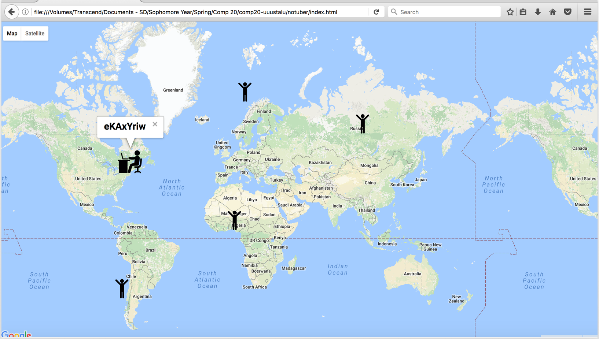

The product examined in this report was the "Black car Service" application. The application consists of two main components: the server-side and the client-side. The purpose of the application is to imitate a transportation and ridesharing application, like uber (but for a web browser instead of a mobile phone). The server receives requests from the clients, who are separated into two groups (drivers, and passengers) depending on their username. The server then responds to these requests by returning a list of drivers who were seen within the last five minutes to passengers, and a list of passengers who requested a vehicle within the last five minutes to drivers. The users can then view the locations of all members of the appropriate group, on a map using their web browser. I was hired to examine the application for security and privacy vulnerabilities. Unfortunately, as will be illustrated in this report, some components of the application have security and privacy vulnerabilities.
In order to test the application for vulnerabilities I conducted a variety of attacks and experiments. I used Postman in order to send post requests in which I attempted to identify Cross Site Scripting Vulnerabilities, opportunities to abuse the noSQL database by making injections, and opportunities to overcome restrictions on input choices. I used my web browser to perform get requests in which I attempted to identify the vulnerabilities mentioned above, by making the appropriate modifications to my queries, and finally I used BurpSuite to try to perform man-in-the middle attacks, identify the possible inappropriate use of hidden fields and also check for the other vulnerabilities mentioned above. I initially attempted to perform all attacks I could think of, without looking at the source code, and then attempted to perform targeted attacks after having reviewed the code. As expected, the success rate of my attacks increased after having access to the code.
Overall, there were plenty of mechanisms in place to prevent a lot of common attacks. However, as with almost all web applications, there were some vulnerable areas as well. The first issue I found was the possibility to enter malicious computer code in the "username" field. This could allow an attacker to show deceptive content to the app's users, show irrelevant and annoying messages and steal some personal information. The second issue I identified was the possibility to easily alter one's coordinates and therefore use the app with a false location. Finally, the last issue I identified was the possibility to easily change one's username to that of another user. This has important implications for privacy, as it could allow a passenger to change his/her username to that of a driver and then see were all other passengers currently using the web application are located on the map.
The First issue I identified was a cross site scripting vulnerability in the "username" value sent to the POST /submit API of the server-side of the application, for passengers. Since, the application does not ensure that the "username" field does not contain Javascript, malicious Javascript code can be inserted to the database, as a legitimate username. This code will then be executed anytime the "username" is shown in a page (in this case in the GET / API of the application, in which all passengers usernames are shown). I believe this is an issue of high severity, as it could potentially steal sensitive user information stored in cookies and also deceive the other users of the website, by showing them false information. I found the issue by making a POST request that included Javascript code as the username to the /submit root, using postman. Screenshots of the request I made, and the resulting message on the index page of the application are shown below.
A possible solution to this problem would be to remove the ability of the value inserted to the "username" field to be interpreted as code, by removing all special, non-alphanumeric characters from the input string, especially the angle brackets.
The Second issue I identified was the ability to send different coordinate values than the ones given by the geolocation API, from the client to the server. This issue is located at both the getData() function of the client side source code and the /submit POST API of the server side. The vulnerability could be exploited by using a proxy. The post request can thus be intercepted and the request parameters can be changed on the fly. I found the problem by using BurpSuite, intercepting the request made by the client to the server with the location data, changing the data, and then observing that the false location data was inserted fully into the database. I believe this is an issue of medium severity. Even though, commonly used transportation and ridesharing systems (which the system examined here is is imitating) often allow passengers to request rides at locations different from their own, this is not true for the drivers. The location of all drivers in the system must be accurate and true for the system to function properly. This is especially important for the possibility of criminal activity occurring during the ride, in which case the location of the vehicle is important evidence. Screenshots of the original request sent to the server, the altered request and the final entry in the database are shown below. In this case I changed my location from Tufts University (42.40, -71,12) to a location in Russia (60.40, 98.12).
A possible solution to this problem would be to use HTTPS instead of HTTP, so that an underlying SSL connection is established, encrypting the data and thus preventing tampering of the data or man-in-the-middle attacks.
The final issue I identified was the possibility of sending an untrue username, by performing an attack similar to the one described above, using a proxy. The location of this issue is once again on both the getData() function of the client side source code and the /submit POST API of the server side. I believe this is an issue of high severity, not only because users could commit illegal activities while pretending to be somebody else (such as not paying for their rides for example), but also because users could obtain unauthorized access to personal information. A passenger could change his username to that of a driver, in order to see the locations of all other passengers currently using the app. I found the issue by using a proxy and BurpSuite, intercepting the request made by the client to the server with the username, changing the username from the original (that of a passenger) to that of a driver, and then observing the locations of all other passengers on the map. Screenshots from the original request, the modified request, and the final result on the map on the client side are shown below.
A possible solution to this problem would be to use some sort of authentication scheme that would make it impossible to impersonate somebody else by providing a false username.
In conclusion, even though the creator of this application has taken extensive measures to prevent possible security vulnerabilities, by validating inputs thoroughly, there are still some input and privacy vulnerabilities that need to be handled. These concern a Cross-Site-Scripting vulnerability, a vulnerability that allows the user to send false position data, and a vulnerability that allows the user to impersonate other users. Out of my above recommendations, I believe that encrypting the data sent from the client to the server, and using an authentication scheme are the most important.